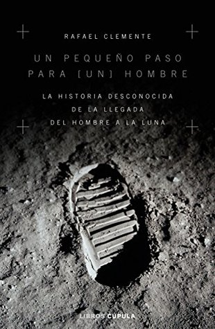

Un pequeño paso para [un] hombre: La historia desconocida de la llegada del hombre a la luna (Spanish Edition)
Reseña por Jorge I. Zuluaga

Ver reseña en GoodReads (necesita cuenta)
Es por eso que leer "otro libro" sobre el tema podría no ser la primera opción para todos. Esta era justamente mi opinión desde que vi este libro en los anaqueles de las librerías. ¿Qué podría aprender nuevo de otro libro sobre el tema? ¿no sería este otra recapitulación (hasta el cansancio) de los mismos hechos que comenzaron con el lanzamiento de los Sputnik a finales de los 50 y terminaron con el último astronauta que piso la Luna en 1972?
Naturalmente, mi posición era tan arrogante como sonaba. En realidad, para el verdadero apasionado por la historia de la ciencia y la tecnología, siempre habrá un detalle, una historia desconocidas sobre este increíble período de la historia. Pero mejor, siempre se encontrará una voz fresca o nueva para que lo refresque. Este es justamente el caso de Rafael Clemente que a través de una narración entretenida, sin muchos trucos literarios y a veces incluso técnica (pero no aburrida) nos transporta de nuevo a los pormenores de la historia de la más grande hazaña de exploración de la especie humana en 300.000 años.
Desde la portada, el libro promete no ser más de lo mismo: "la historia desconocida de la llegada del hombre a la Luna". Pero no es cierto. En realidad es más de lo mismo. Pero es que los hechos que narra son tan únicos, tan fantásticos que es difícil aburrirse escuchando nuevamente las historias de los primeros tropiezos de los estadounidenses por lanzar un objeto al espacio (en un tiempo en el que ya tenían la capacidad de hacerlo pero que, por razones de la burocracia y la jerarquía militar, perdieron la oportunidad de lograrlo sin demoras) o las aventuras de los primeros 7 (o 6) astronautas que se metieron, arriesgando su vida, en esas cápsulas, con el espacio de una lavadora grande, que habían construido para el proyecto Mercury, hasta llegar naturalmente a los pormenores del vuelo de Collins, Aldrin y Armstrong que terminó como todos sabemos.
Aún siendo más de lo mismo, la promesa de la portada no deja de cumplirse. En realidad el texto esta lleno de datos y anécdotas curiosas y relativamente desconocidas (al menos para mí que no soy un experto en historia del vuelo espacial). Me llamaron la atención algunas que desconocía (o que había olvidado), como aquella del sánduche, que los astronautas de una de las misiones Gemini, metieron en la nave a escondidas y que posiblemente fue la única comida normal que se probó o probaría en el espacio; una "replica" del cual todavía se conserva en museos. O aquella que tiene que ver con el hecho de que los residuos líquidos de los astronautas que viajaban a la Luna eran expulsados al espacio donde se congelaban, sin embargo, por llevar la misma velocidad de la nave, los "cristales de orina" acompañaban la nave y en ocasiones interferían en las actividades de navegación con las estrellas; los astronautas bautizaron a estos desechos la constelación de "Urión". O el hecho de que Buzz Aldrin término siendo alcohólico, entre otras razones, por la gran cantidad de recepciones y cocktails a los que serían invitados los astronautas en las semanas y meses que siguieron a su llegada de la Luna.
Me gusto mucho del texto el hecho de que viene acompañado de diagramas de ingeniería de algunos dispositivos y naves involucrados en esta carrera tripulada al espacio. Nunca los había visto y creo que es difícil que un autor de un libro de historia o un libro divulgativo, los saque de los textos técnicos para enseñarlos de esta manera. Los verdaderos apasionados (como yo) encontraran estos diagramas (que describen por ejemplo el panel de control de las Gemini o el interior del módulo de comando y servicio o el reducido espacio de los módulos lunares) verdaderamente informativos.
Aunque leí este libro, para estar a la altura en la celebración de los 50 años del alunizaje del Apollo 11, estoy seguro que no pasará nunca de moda. Lo recomiendo sin duda.